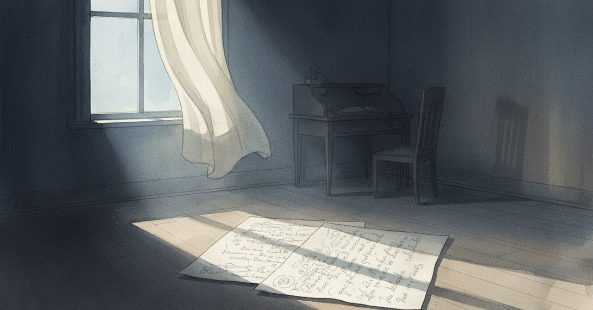

復縁したい気持ちを「その時じゃない」と書いた3月の夜

2026-04-25、自分の中の揺れを、今ならもう少し冷静に見られる気がした。揺れが消えたのではなく、見る距離が変わった。
今日の現場
今日は開発も執筆も、静かな一日だった
でも静かさの裏で、整理できていない感情はある
進捗は淡々と進む
進捗と内面は、別の速度で動いている
その差を誤魔化すほど、記事が書けなくなる
あの頃と今
2025年3月18日、「ジャーナリングまとめ（3/18）」というタイトルで、その日の日記は箇条書きで整理されていた。いつものランダムな一日の描写ではなく、自分の中の感情を5つに番号を振って整理しようとした夜だった。
書かれていた内容は、こうだった。表面的な欲求（性欲）の裏には、「安心感」を求める感情があると気づいた。本音では元カノとの復縁を強く望んでいるが、「今は絶対にその時ではない」と明確に感じている、と。過去の関係では、自分の弱さ（自己コントロールの未熟さ）が原因で疑心暗鬼になり、相手に負担をかけてしまったという反省があった。
一番恐れているのは「自分自身を失うこと」。半年、自己確立と自己コントロール能力を高めるため努力してきたため、その自分が再び崩れることへの強い恐れがある、と書いていた。瞑想、筋トレ、ジャーナリングなど、自分を安定させるルーティンを継続していくことが基盤になる、とも。
「今はまだその時ではない」という自分の直感を信じ、焦らず待つ忍耐力と、自分自身への信頼を深める、と締めくくられていた。いつもの感情のままの日記ではなく、自分で自分をマネジメントしようとしていた夜の記録だった。
頭の中
欲求の表面と裏側は、別のレイヤーで動いている。表面が「性欲」と名乗っていても、裏側で「安心感が足りない」と叫んでいることがある。表面を処理しても、裏側は静かに残り続ける。
ただ、この構造を見抜けるのは、落ち着いているときだけだ。渦中にいる自分に「裏には安心感がある」と説明しても、たぶん届かない。書いて残しておくのは、次に渦中に入ったときの自分への手紙になる。
まだ途中のこと
「今はその時じゃない」と書いた夜から1年以上経って、「その時」が来たのかどうか、まだ自分でも答えが出ない。答えが出ていないこと自体が、たぶん答えなのかもしれない。
読んでくれてありがとう。
#創作大賞2026 #日記 #自己対話 #ジャーナリング #内省 #スキしてみて